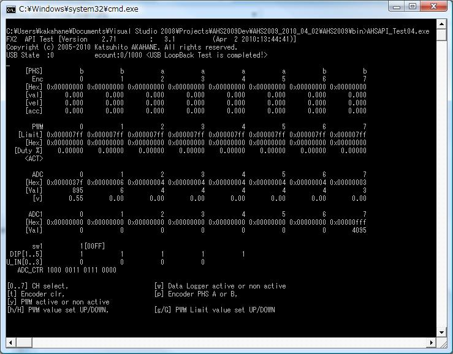

・binディレクトリ下にコントローラテストプログラムを収録しています。
・AHS_TEST.batを実行するとテストプログラムが実行されます。
テスト内容
・ループバックテスト：USB通信が正常に行われているかのチェックができます．
・エンコーダカウントテスト：エンコーダカウントが正常に動作できているかを確認できます．
・PWM出力テスト：PWMの出力値の指令ができます．PWMの動作確認ができます．
・ADCテスト：モータ電流計測用のA/Dコンバータが正常に動作できているかを確認できます．
・ADC1テスト：外部拡張A/Dコンバータ接続時に正常にADCが動作できているかを確認できます．
・操作方法はテストプログラム画面上の指示に従ってください．

※上図のプログラム実行画面のレイアウトなどは変更される可能性があります．